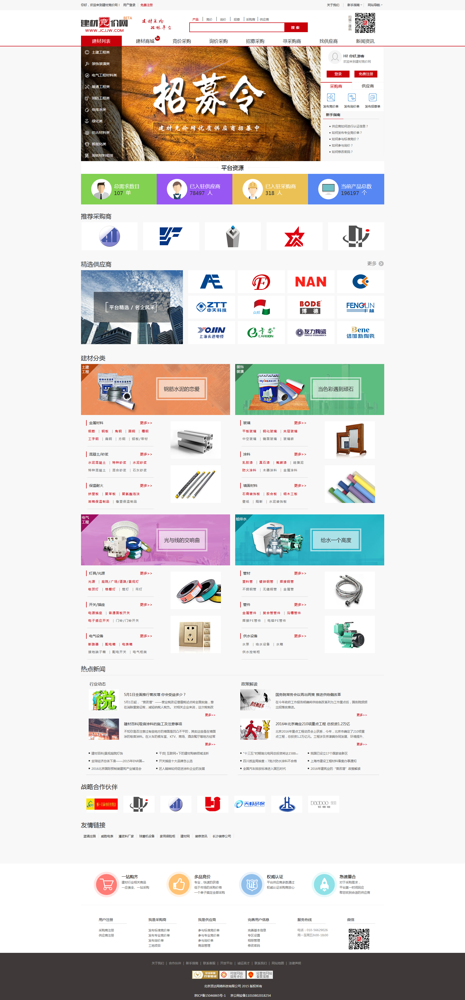
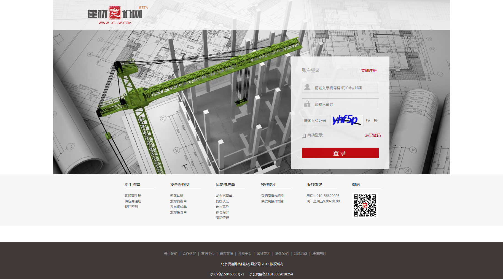
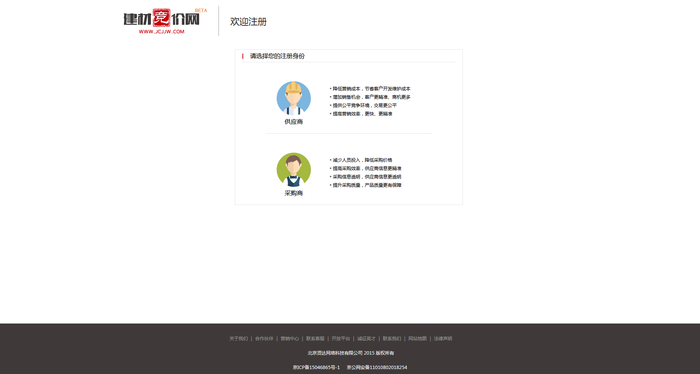
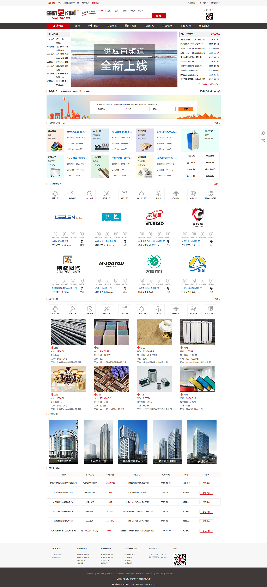

建材竞价网，隶属于北京贤达网络科技股份有限公司，是一家专注于打造建材购销良性发展生态系统的平台。 建材竞价网 由于传统建材交易模式中存在着成本过高、交易环节冗长、信息不透明等诸多问题，建材竞价网顺应互联网+的趋势，利用先进的互联网技术和建筑建材领域的专业背景，致力于塑造建材购销良性发展新生态系统。 建材竞价网，面向全国建材行业中的采购商和供应商，为其提供专业、优质、聚合的服务.帮助采购商降低采购成本，提高采购效率，使采购更透明化；帮助供应商准确获得订单，省去客户开发成本，销售互联网化。 建材竞价网连接采购商和供应商，一方面为采购商提供多种采购形式，最大限度满足采购商多种采购需求；另一方面为供应商提供多种销售方式，精准有效增加供应商的销售机会。
案例部分图片展示



